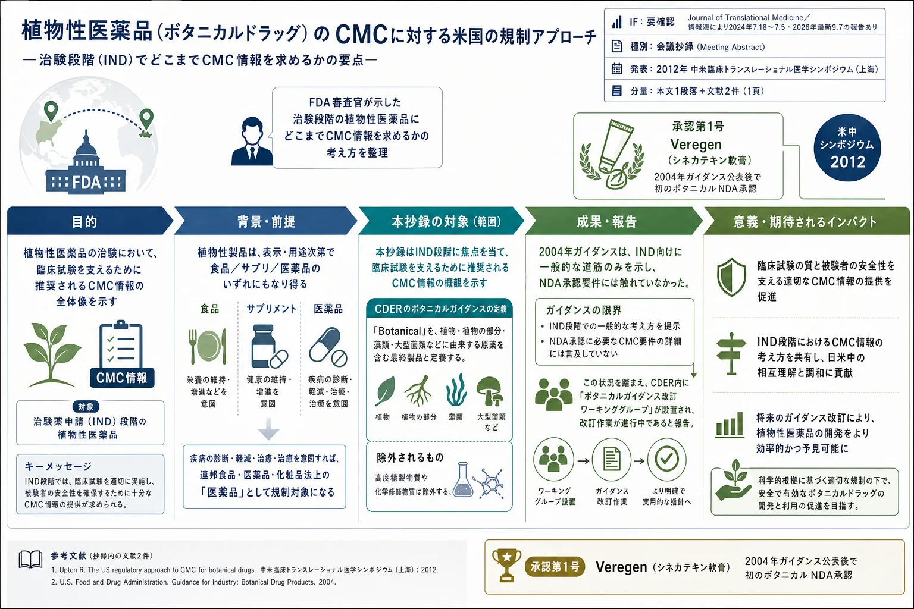

植物性医薬品（ボタニカルドラッグ）のCMCに対する米国の規制アプローチ（2012年 米中シンポジウム 会議抄録）

<!-- 方針: 全訳。原本は BioMed Central 発行の1頁の会議抄録(Meeting Abstract)であり、通常の研究論文のような Abstract/Introduction/Results/Methods 構成を持たない（本文は1段落＋書誌情報＋参考文献2件のみ）。図表・数値データは無いため PyMuPDF による図抽出は対象外（get_images()=0件を確認済み）。短い規制コメンタリのため全訳密度の分量目安(3万〜7万字)は適用対象外だが、原文の内容は1文も欠かさず訳出し、背景理解を助ける訳者補足を「> 補足:」で明確に区別して付す。「> 補足:」は訳者注。 -->
書誌情報
- 標題（原題）: US regulatory approaches to chemistry, manufacturing, and controls for botanical drug products
- 著者・所属: Rajiv Agarwal（米国食品医薬品局 医薬品評価研究センター〈CDER〉医薬品科学部 新薬品質評価室〈Office of New Drug Quality Assessment, Office of Pharmaceutical Science〉、米国メリーランド州シルバースプリング）
- 種別: 会議抄録（Meeting Abstract）— 2012 Sino-American Symposium on Clinical and Translational Medicine（SAS-CTM、2012年米中臨床トランスレーショナル医学シンポジウム、中国・上海、2012年6月27〜29日）における発表の抄録
- 掲載誌・巻号・DOI: Journal of Translational Medicine 2012, 10(Suppl 2):A40. https://doi.org/10.1186/1479-5876-10-S2-A40（BioMed Central、オープンアクセス、CC BY 2.0）
- インパクトファクター: 要確認。Journal of Translational Medicine のIFは情報源により幅があり、JCR 2024版で7.18〜7.5とする報告と、2026年公表の最新値（2025年被引用データに基づく）で9.7（Q1）とする報告がある。正確な年次・出典が一致しないため確定値としては記載しない。 なお本稿は同誌の増刊号(Supplement)に掲載された1頁の学会抄録であり、通常号の原著論文とはIFの意味づけが異なる点にも留意されたい。
- 受理経過 / ライセンス: 掲載 2012年10月17日（Published: 17 October 2012）。Creative Commons Attribution License（CC BY 2.0）のもとで自由な利用・配布・複製が許諾されている。
補足: 本稿は実験データを伴う原著論文ではなく、FDA審査官による口頭発表の会議抄録（1頁）である。BioMed Centralが刊行する学会プロシーディングス形式で、Abstract・Introduction・Methods・Resultsといった通常の論文構成は取らず、発表内容を1段落に凝縮したものである。原文に図・表・数値データは一切含まれない（PyMuPDFで画像0件を確認）。とはいえ、米国における植物性医薬品（ボタニカルドラッグ）のCMC規制の変遷を理解する上での一次資料として、本サイトの他の関連ページ（fda-botanical-drug-development-guidance-2016＝2016年版ガイダンス全訳、botanical-drug-development-us-fda-perspective＝FDA審査チームによる34年間の総括、botanical-drug-cmc-four-approved-review＝承認4製品のCMCレビュー）と合わせて読むことで、2004年ガイダンス公表からその後の改訂に至る経緯の「途中経過」を示す資料として位置づけられる。
本文（全訳）
米国では、植物由来の製品（botanical products）が広く用いられている。その表示（labeling）と意図された用途（intended use）次第で、植物由来製品は食品、栄養補助食品（dietary supplement）、および／または医薬品のいずれにもなり得る。ある植物由来製品が疾病の診断、軽減、治療、または治癒を目的として意図されている場合、それは連邦食品・医薬品・化粧品法（Food, Drug, and Cosmetic Act）上の「医薬品」であり、適用される医薬品規制の対象となる。
CDER（医薬品評価研究センター）のボタニカル医薬品製品に関するガイダンス（CDER Guidance on Botanical Drug Products）は、「Botanical（植物性）」という用語を、植物起源の原薬（drug substance）を含む最終的な、表示済みの製品と定義している。これには植物またはその部分、藻類、大型菌類（macroscopic fungi）、およびそれらの組み合わせが含まれ得る。この用語には、高度に精製された物質や、植物由来原料から化学的に修飾された物質は含まれない。
本発表は、米国において治験薬申請（Investigational New Drug application、IND）のもとで植物性医薬品製品の臨床試験を裏づけるために推奨される、化学・製造・品質管理（Chemistry, Manufacturing, and Controls、CMC）情報の概観を示すものである。Veregen（シネカテキン）軟膏[1]は、ボタニカルガイダンス（2004年）[2]の公表以来、FDAが承認した最初の植物性医薬品製品であった。同ガイダンスはIND申請への一般的な道筋を与えたものであったが、NDA（新薬承認申請）承認の要件については沈黙していた。「CDERボタニカルガイダンス改訂ワーキンググループ（CDER Botanical Guidance rewrite Working Group）」が設置され、将来のボタニカルガイダンスにおいてFDAの現在の科学的・規制的な考え方を統合するための作業が進行中である。
参考文献
原文に付された参考文献は次の2件（原文どおり、番号は原文準拠）。
- Chen ST, Dou J, Temple R, Agarwal R, Wu K-M, Walker S: New therapies from old medicines. Nature Biotechnology 2008, 26(10):1077-1083.
- Guidance for Industry. Botanical Drug Products（米国FDA、2004年6月）。原文中のリンク先: http://www.fda.gov/downloads/Drugs/GuidanceComplianceRegulatoryInformation/Guidances/UCM070491.pdf （2012年当時のFDA旧サイトのURLであり、現在はFDA公式サイトの新しいURL体系に統合・移設されている可能性が高い。本サイトに全訳を収録している2016年版ガイダンス〈
fda-botanical-drug-development-guidance-2016〉は、この2004年版を置き換えた改訂版にあたる）。
訳者補足
補足: 本抄録は情報量そのものは少ないが、漢方・生薬QCの実務者にとっては次の3点で文脈的な価値がある。 1. 「ボタニカル＝混合物のまま医薬品にする」という制度の骨格が、この短い抄録の中にすでに凝縮されている。 「高度精製物質・化学修飾物質は除外する」という一文は、単一成分に精製してしまえば通常の新規化学物質（NCE）医薬品の審査経路に移ることを意味し、生薬・方剤のように複数成分の混合物のまま品質を保証する規制哲学の出発点になっている。 2. Veregen（シネカテキン軟膏）が「2004年ガイダンス公表後で初のボタニカルNDA承認」と明記されている点は、本サイトの他ページの記述と整合する。 Veregenは2006年10月31日にNDA 021902として承認されており（botanical-drug-cmc-four-approved-review参照）、本抄録発表時点（2012年）ではまだFDAが承認した植物性医薬品としては数少ない実例の一つであった。 3. 本抄録が「進行中」と述べる「CDERボタニカルガイダンス改訂ワーキンググループ」の作業は、その後2016年12月に「Botanical Drug Development — Guidance for Industry（Revision 1）」として結実した（本サイトfda-botanical-drug-development-guidance-2016に全訳あり）。すなわち本抄録は、2004年版から2016年版への改訂という約12年越しのプロセスの、ちょうど中間地点（2012年）でのFDA審査官自身による現状報告と位置づけられる。2016年版で明文化される「証拠の総体（totality-of-the-evidence）」という中核概念は本抄録にはまだ登場していない点も、時系列の資料として読む際の着眼点になる。 なお、著者Rajiv Agarwal氏の所属（Office of New Drug Quality Assessment, Office of Pharmaceutical Science, US FDA）や発表内容から、本抄録はCMC・品質評価の審査実務者自身の視点による一次資料であり、学術的な査読論文というより「規制当局からの公式見解の要約的な口頭発表記録」という性格が強い。数値データが無いのはこの資料種別（会議抄録）の性質によるものであり、省略や欠落によるものではない。